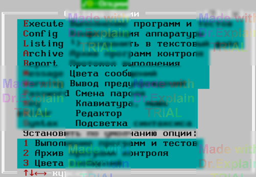

8. Конфигурирование ПОАСК
8.1 Меню Options – Опции
Для управления параметрами ПОАСК используется иерархическое меню Options – Опции (вызывается Alt + O), см. рис. 1:

Рисунок 1 – Меню Options – Опции
Ключевые подпункты:
- Options/Password – смена пароля (см. п. 6).
- Options/Key – настройки клавиатуры и мыши ([11, п. 8.2]).
- Options/eDitor – параметры текстового редактора ([11, п. 8.3]).
- Options/Syntax – подсветка синтаксиса ([11, п. 8.4]).
Чтобы получить справку по любому пункту меню, выберите его стрелками и нажмите F1.
8.2 Конфигурационные файлы
ПОАСК хранит свои настройки в двух файлах (в стартовой директории ПОАСК):
mkf_ide.cfg– состояние интегрированной среды;mkf_hrd.cfg– конфигурация аппаратуры АСК.
Если mkf_hrd.cfg отсутствует, ПОАСК предложит установить «конфигурацию по умолчанию», что может привести к неверной работе. Восстановите файл с дистрибутива или вручную задайте параметры в Options / Config – Конфигурация аппаратуры, после чего новый mkf_hrd.cfg будет автоматически сохранён.
Замечание. Команда Options / Listing внутри «Конфигурации аппаратуры» позволяет сохранить все текущие настройки в текстовый файл (по умолчанию mkf_hrd.txt), распечатать его и затем использовать для ручного восстановления параметров.